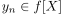
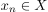
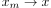
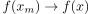
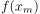

Folgenkompaktheit der Bildmenge einer stetigen Funktion für eine folgenkompakte Menge
1. Satz
Seien  und
und  topologische Räume und
topologische Räume und  eine stetige Funktion.
Falls
eine stetige Funktion.
Falls  folgenkompakt ist, so ist auch
folgenkompakt ist, so ist auch  folgenkompakt.
folgenkompakt.
2. Beweis
Sei  eine Folge, so existiert eine Folge .
Da folgenkompakt ist, existiert eine konvergente Teilfolge .
Da Stetigkeit Folgenstetigkeit impliziert folgt, dass , d.h.  ist eine konvergente Teilfolge von